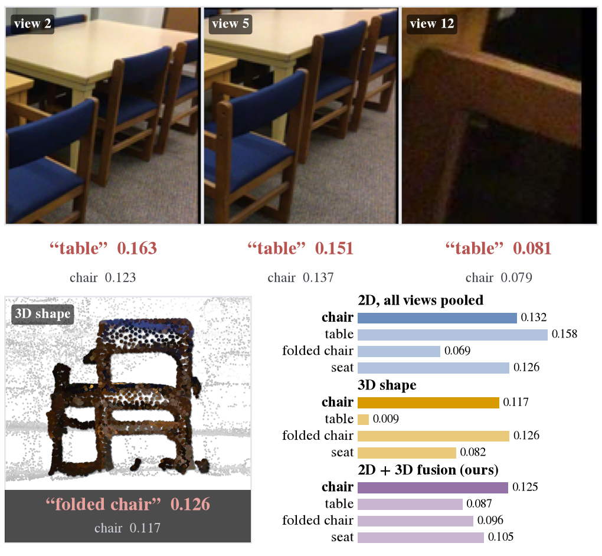

Research Interests
I look for the structural fingerprint of a problem — a conserved quantity, a canonical geometry, an invariant that has to hold — and build mechanisms on top of it, using its violation or its skeleton as the signal.
My current focus is 3D-grounded, uncertainty-aware perception for robot policy: giving embodied agents explicit, interpretable spatial structure to reason and act on, rather than relying on black-box end-to-end maps. I care about representations you can inspect, not just ones that work.
This way of thinking travels. I have used the same instinct to turn a conserved Hamiltonian into a maneuver-detection prior for satellite tracking, to fuse 2D image and 3D shape encoders through their largely disjoint failure patterns, to anchor 3D instance segmentation on geometric keypoints, and to ground physical presence as an access-control primitive. I am most interested in the seams between fields — physics and estimation, geometry and learning, perception and control — where the right abstraction from one domain unlocks another.
- 3D Scene Understanding
- Robot Learning
- Embodied AI
- Physical Reasoning
Publications

Frozen 2D image and 3D shape encoders fail on largely disjoint sets of instances. SenseFuse fuses them at the mask-labeling stage of open-vocabulary 3D instance segmentation with a closed-form, label-free scene-level weight estimated from a single scene's unlabeled proposals in milliseconds. Median +7.1 pts, recovering 67–100% of the oracle-weight gain on ScanNet200, Replica, and ScanNet++.
An Interacting Multiple Model (IMM) filter whose transition probabilities are driven by a CUSUM statistic on the J2-Hamiltonian Lie residual, an invariant of coast dynamics that is broken only by thrust. See the interactive demo below.
Projects
Short clip (3 s). Full demos on YouTube:
LLM-Guided Autonomous Robots
Mar–Jun 2026An LLM-guided autonomous mobile delivery robot. The stack integrates RTAB-Map localization, path planning, and vision-based object pick-up, letting the robot interpret natural-language instructions and carry out delivery tasks end to end.
ROS · Python · RTAB-Map · LLM · Path Planning

Nubzuki's Adventure — Segmentation & Rendering Contest
Mar–Jun 2026Class-agnostic 3D instance segmentation of Nubzuki (the KAIST mascot) synthesized in MultiScan, using a PCA-aware encoder, NubzukiPriorNet. I also produced a Gaussian-splatting-based rendered short film, Nubzuki's Adventure, compositing handcrafted 3D objects via z-buffering.
PyTorch · Gaussian Splatting · 3D Segmentation · PCA
J2-Hamiltonian Invariant–Driven Mode-Transition IMM for Maneuver Detection
Mar 2026–PresentSatellite maneuver detection using an Interacting Multiple Model (IMM) filter whose transition probability matrix is driven by a measurement-side CUSUM on the J2-Hamiltonian Lie residual. Watch the clip, or launch the live interactive 3D visualization to drag and explore the orbit yourself. Now being written up as a paper [2].
MATLAB · Kalman Filter · IMM · Orbital Mechanics
Education
Experience
Honors & Awards
Contact
Feel free to reach out at hanes1207@kaist.ac.kr.